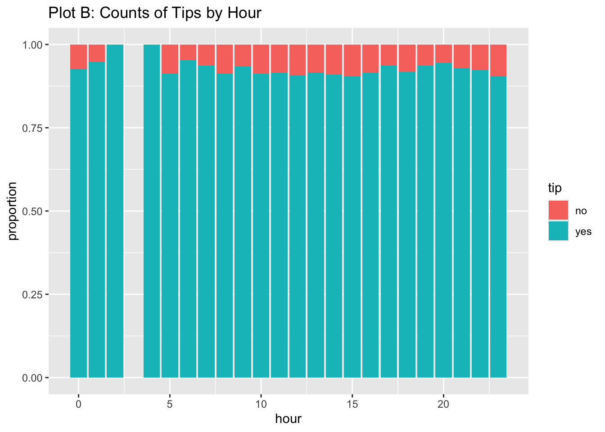
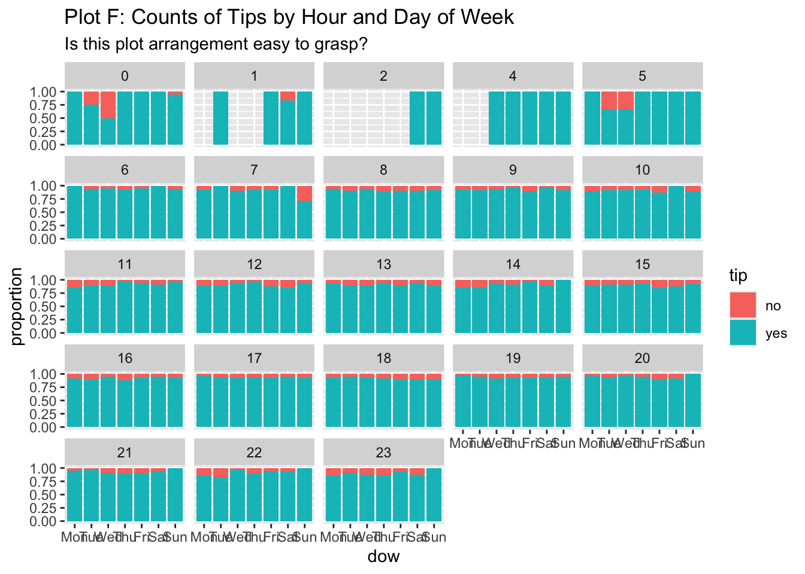
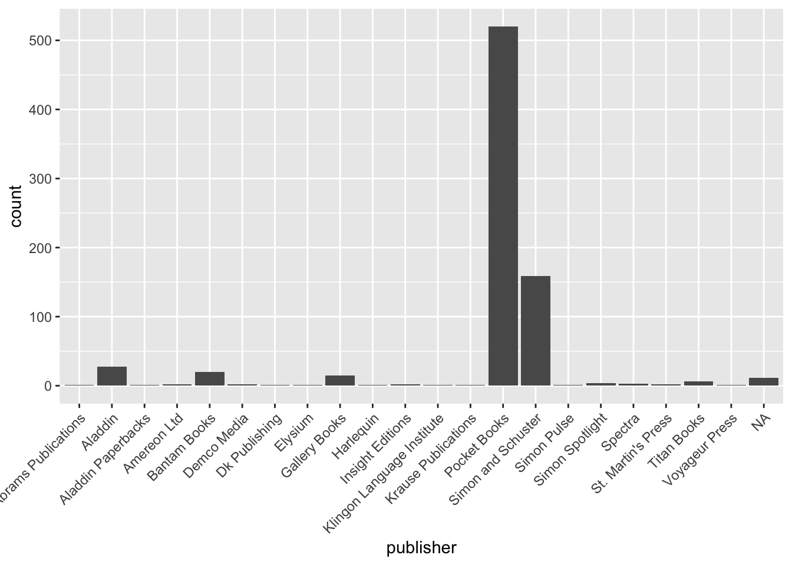

── Attaching core tidyverse packages ──────────────────────── tidyverse 2.0.0 ──
✔ dplyr 1.1.4 ✔ readr 2.1.5
✔ forcats 1.0.0 ✔ stringr 1.5.1
✔ ggplot2 3.5.1 ✔ tibble 3.2.1
✔ lubridate 1.9.3 ✔ tidyr 1.3.1
✔ purrr 1.0.2
── Conflicts ────────────────────────────────────────── tidyverse_conflicts() ──
✖ dplyr::filter() masks stats::filter()
✖ dplyr::lag() masks stats::lag()
ℹ Use the conflicted package (<http://conflicted.r-lib.org/>) to force all conflicts to become errors
library(mosaic)
Registered S3 method overwritten by 'mosaic':
method from
fortify.SpatialPolygonsDataFrame ggplot2
The 'mosaic' package masks several functions from core packages in order to add
additional features. The original behavior of these functions should not be affected by this.
Attaching package: 'mosaic'
The following object is masked from 'package:Matrix':
mean
The following objects are masked from 'package:dplyr':
count, do, tally
The following object is masked from 'package:purrr':
cross
The following object is masked from 'package:ggplot2':
stat
The following objects are masked from 'package:stats':
binom.test, cor, cor.test, cov, fivenum, IQR, median, prop.test,
quantile, sd, t.test, var
The following objects are masked from 'package:base':
max, mean, min, prod, range, sample, sum
library(ggformula)library(skimr)
Attaching package: 'skimr'
The following object is masked from 'package:mosaic':
n_missing
library(knitr)library(kableExtra)
Attaching package: 'kableExtra'
The following object is masked from 'package:dplyr':
group_rows
categorical variables:
name class levels n missing
1 tip character 2 10000 0
2 company character 7 10000 0
3 local character 2 10000 0
4 dow character 7 10000 0
5 month character 4 10000 0
distribution
1 yes (92.1%), no (7.9%)
2 other (27.1%) ...
3 no (81.2%), yes (18.8%)
4 Thu (19.6%), Wed (17.5%), Tue (16.3%) ...
5 Apr (31.8%), Mar (31.4%), Feb (20.4%) ...
quantitative variables:
name class min Q1 median Q3 max mean
1 rownames integer 1 2500.75 5000.50 7500.2500 10000.0 5000.500000
2 distance numeric 0 0.94 1.78 15.5625 42.3 6.224144
3 hour integer 0 11.00 15.00 18.0000 23.0 14.177300
sd n missing
1 2886.895680 10000 0
2 7.381397 10000 0
3 4.359904 10000 0
gf_bar(~ hour, fill =~ tip, data = taxi_modified) %>%gf_labs(title ="Plot B: Counts of Tips by Hour")
gf_props(~ hour, fill =~ tip, position ="fill", data = taxi_modified) %>%gf_labs(title ="Plot B: Counts of Tips by Hour")

##gf_bar(~ dow, fill =~ tip, data = taxi_modified) %>%gf_labs(title ="Plot C: Counts of Tips by Day of Week")
##gf_bar(~ month, fill =~ tip, data = taxi_modified) %>%gf_labs(title ="Plot D: Counts of Tips by Month")
##gf_bar(~ month | dow, fill =~ tip, data = taxi_modified) %>%gf_labs(title ="Plot E: Counts of Tips by Day of Week and Month")
#### This may be too busy a graph...gf_bar(~ dow | hour, fill =~ tip, data = taxi_modified) %>%gf_labs(title ="Plot F: Counts of Tips by Hour and Day of Week",subtitle ="Is this plot arrangement easy to grasp?")
gf_props(~ dow | hour, fill =~ tip, position ="fill", data = taxi_modified) %>%gf_labs(title ="Plot F: Counts of Tips by Hour and Day of Week",subtitle ="Is this plot arrangement easy to grasp?")

## This is better!gf_bar(~ hour | dow, fill =~ tip, data = taxi) %>%gf_labs(title ="Plot G: Counts of Tips by Hour and Day of Week",subtitle ="Swapped the Facets")
gf_props(~ hour | dow, fill =~ tip, position ='fill', data = taxi) %>%gf_labs(title ="Plot G: Counts of Tips by Hour and Day of Week",subtitle ="Swapped the Facets")
Rows: 783 Columns: 11
── Column specification ────────────────────────────────────────────────────────
Delimiter: ";"
chr (7): title, author, publisher, identifier, series, subseries, dedication
dbl (3): nchap, nword, nchar
date (1): date
ℹ Use `spec()` to retrieve the full column specification for this data.
ℹ Specify the column types or set `show_col_types = FALSE` to quiet this message.
star_trek
# A tibble: 783 × 11
title author date publisher identifier series subseries nchap nword
<chr> <chr> <date> <chr> <chr> <chr> <chr> <dbl> <dbl>
1 Star Tr… Alan … 2009-05-12 Simon an… 1439163391 AV <NA> 18 77035
2 Starfle… Rick … 2010-11-02 Simon Sp… 978144241… AV Starflee… 14 40129
3 Starfle… Rudy … 2010-12-28 Simon Sp… 978144241… AV Starflee… 31 52547
4 Starfle… Rick … 2011-06-28 Simon Sp… 978144241… AV Starflee… 13 39495
5 Starfle… Alan … 2012-06-26 Simon Sp… 978144242… AV Starflee… 30 62030
6 Star Tr… Alan … 2013-05-21 Gallery … 978147671… AV <NA> 17 77438
7 Captain… James… 1998-06-01 Pocket B… 978143910… CT <NA> 21 95110
8 Captain… Macke… 1998-10-01 Pocket B… 978074345… CT <NA> 26 76392
9 Captain… Chris… 1998-10-01 Pocket B… 978143910… CT <NA> 34 78678
10 The Cap… John … 2000-03-01 Pocket B… 978074340… CT <NA> 176 436682
# ℹ 773 more rows
# ℹ 2 more variables: nchar <dbl>, dedication <chr>
categorical variables:
name class levels n missing
1 title character 781 783 0
2 author character 277 783 0
3 publisher character 21 772 11
4 identifier character 783 783 0
5 series character 28 783 0
6 subseries character 15 56 727
7 dedication character 372 372 411
distribution
1 Kobayashi Maru (0.3%), Warped (0.3%) ...
2 Peter David (4.9%) ...
3 Pocket Books (67.4%) ...
4 (%) ...
5 TOS (26.8%), TNG (18.6%), SCE (10.7%) ...
6 Typhon Pact (16.1%) ...
7 (%) ...
Date variables:
name class first last min_diff max_diff n missing
1 date Date 1967-01-01 2017-11-28 0 days 485 days 783 0
quantitative variables:
name class min Q1 median Q3 max mean sd
1 nchap numeric 1 13 21 29.0 373 24.58816 21.61247
2 nword numeric 782 52500 70730 90994.5 687175 76190.07535 52453.34633
3 nchar numeric 4337 310520 415964 555866.5 4484069 461822.36271 326062.44928
n missing
1 760 23
2 783 0
3 783 0
Plotted graphs
gf_bar(~ publisher, data = star_trek) %>%gf_theme(theme(axis.text.x =element_text(angle =45, hjust =1)))

gf_bar(~ series, data = star_trek) %>%gf_theme(theme(axis.text.x =element_text(angle =45, hjust =1)))